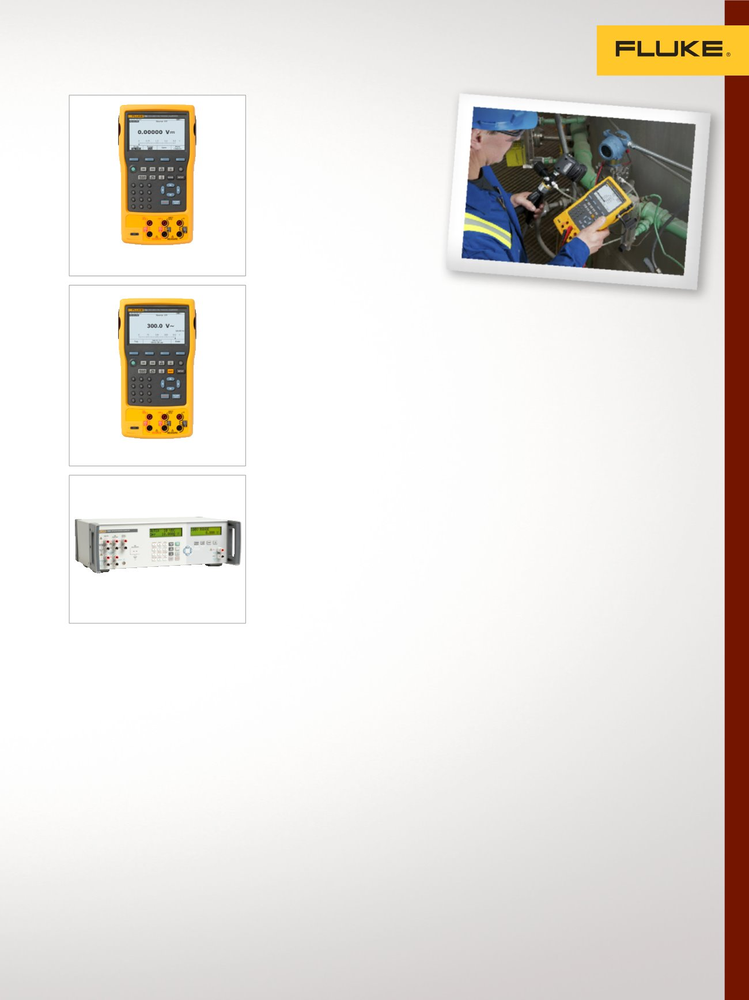

5
Calibración eléctrica, Multifunción y de lazo en mA
Calibradores
multifunción
Estos calibradores de
campo y laboratorio
generan, simulan y miden la
presión, la temperatura y las
señales eléctricas con una
precisión excepcional.
Calibrador de procesos
de documentación 753
Instrumento portátil de gran
resistencia para generar, simular y
medir la presión, la temperatura y
las señales eléctricas.
•
Mide voltios, mA, RTD,
termopares, frecuencias y
ohmios para comprobar sensores,
transmisores y otros instrumentos
•
Genera/simula voltios, mA,
termopares, RTD, frecuencias,
ohmios y presión para
calibrar transmisores
•
Durante las pruebas, los
transmisores de potencia utilizan
una alimentación en lazo con
medición simultánea de mA
•
Permite descargar
procedimientos y cargar los
resultados de las calibraciones
realizadas sobre el terreno
•
Calibración trazable NIST
Calibrador de procesos con
documentación automática
754 con HART
Herramienta resistente y
fiable para calibrar, mantener
y solucionar problemas de
HART y otros instrumentos.
•
Mide voltios, mA, RTD,
termopares, frecuencias y
ohmios para comprobar sensores,
transmisores y otros instrumentos
•
Genera/simula voltios, mA,
termopares, RTD, frecuencias,
ohmios y presión para
calibrar transmisores
•
Funciona con los modelos más
habituales de transmisores HART
y ofrece más compatibilidad con
los comandos específicos de los
dispositivos que ningún otro
calibrador de campo HART
•
Permite descargar procedimientos
y cargar los resultados de las
calibraciones realizadas sobre
el terreno
•
Calibración trazable NIST
Calibrador de procesos
de precisión 7526A
El mejor equilibrio entre
economía y precisión para el
instrumental de medición en
los procesos de calibración de
temperatura y presión.
•
Genera y mide tensión CC,
corriente, resistencia, RTD
y termopares
•
Mide la presión con la
utilización de módulos de
presión 700/525A-P de Fluke
•
Incluye fuente de alimentación
de lazo de 24 V cc, función
automatizada de prueba del
interruptor y mide
de 4 mA a 20 mA
•
Calibración trazable NIST
753
7526A
754